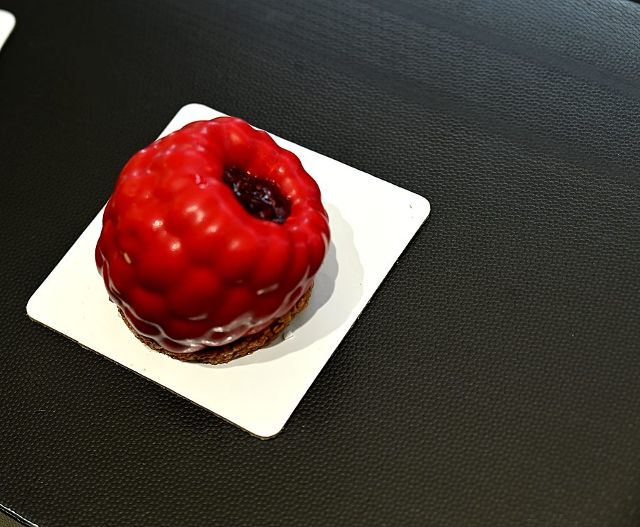

Nos pâtisseries
Des créations qui trompent l'œil
Trompe-l'œil, dômes glacés et grands classiques, à découvrir en vitrine.
Chaque jour, la vitrine se compose de créations maison. Voici quelques-unes de nos pâtisseries : la sélection évolue au fil des saisons et des envies du chef.
Trompe-l'œil cacahuète
Une coque qui imite à s'y méprendre une cacahuète géante.
Trompe-l'œil framboise
Un glaçage rouge brillant, un cœur fruité.
Trompe-l'œil noisette
La noisette sublimée, posée sur son sablé.
Dôme pistache
Un glaçage vert intense et des éclats de pistache.
Dôme chocolat coco
Chocolat et copeaux de noix de coco.
Fraisier
Chantilly généreuse et fraise entière.
Tarte aux framboises
Framboises fraîches sur pâte sablée.
Paris-Brest
Pâte à choux et crème au praliné.
Dôme pistache
Vu sous un autre angle.
Fraisier
La couronne de chantilly, en détail.
Disponibilités variables selon les jours. Pour être sûr de trouver votre pâtisserie préférée, appelez-nous.

Une pâtisserie pour une occasion ?
Parlez-nous de votre projet : nous vous dirons ce qu'il est possible de préparer.